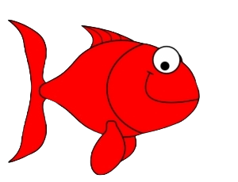
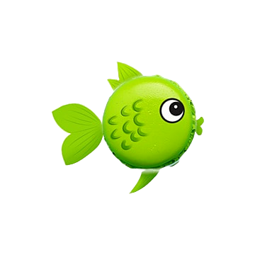
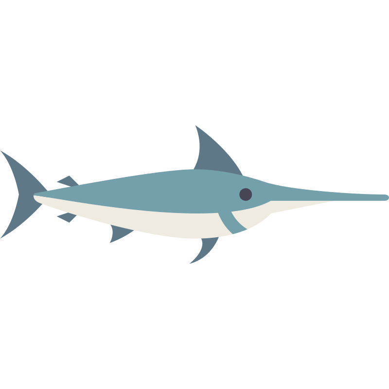

Maybe I am the slowest, but I have smooth transition. Thanks, requestAnimationFrame!

I like setTimeout! Why not to use it?

I am so crazy that you even can not see all my transitions! queueTask make me SO FAST!
